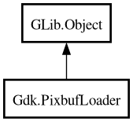

PixbufLoader
Object Hierarchy:

Description:
[
CCode ( type_id =
"gdk_pixbuf_loader_get_type ()" ) ]
public class PixbufLoader :
Object
Content:
Creation methods:
Methods:
Signals:
Inherited Members:
All known members inherited from class GLib.Object